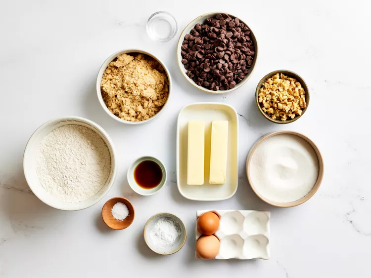
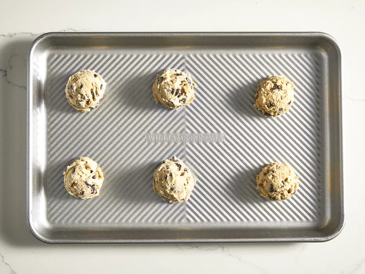
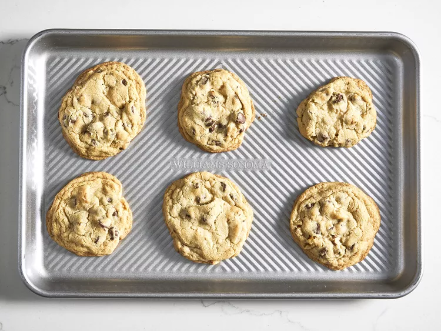
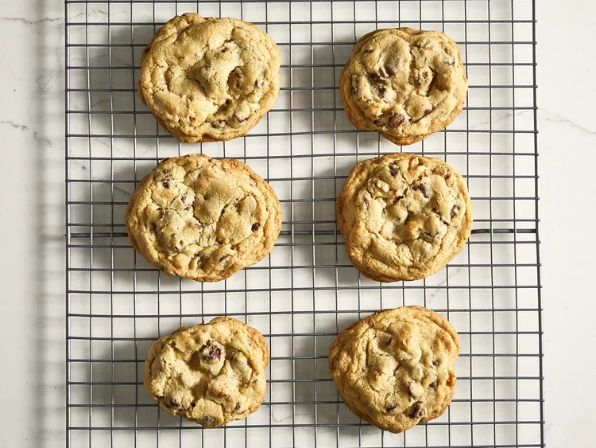

Chocolate Chip Cookies

Description:
Making bakery-worthy chocolate chip cookies is much easier than it seems. You'll find a detailed ingredient list and step-by-step instructions in the recipe below, but let's go over the basics.
Ingredients:
- Butter:
- This classic chocolate chip cookie recipe starts with two sticks of butter creamed with white and brown sugars. The blend of sugars creates a perfectly balanced flavor.
- Eggs:
- Eggs add moisture and act as a binding agent, which means they help hold the dough together.
- Vanilla:
- Vanilla extract enhances the overall flavor of the chocolate chip cookies.
- Baking Soda:
- Baking soda acts as a leavener, which means it helps the cookies rise.
- Water:
- A bit of hot water creates steam as it bakes, working with the baking soda to puff the cookies up.
- Salt:
- A pinch of salt enhances the flavors of the other ingredients, but it won't make the cookies taste salty.
- Flour:
- All-purpose flour helps create gluten, which adds structure to the cookie dough.
- Chocolate Chips:
- Of course, you'll need semisweet chocolate chips! You can use dark or milk chocolate chips if you prefer.
- Nuts (optional):
- Walnuts are optional, but they add nutty flavor and a welcome crunch.
Directions:
- Gather your ingredients, making sure your butter is softened, and your eggs are room temperature.

- Preheat the oven to 350 degrees F (175 degrees C). Beat butter, white sugar, and brown sugar with an electric mixer in a large bowl until smooth.
- Beat in eggs, one at a time, then stir in vanilla.
- Dissolve baking soda in hot water. Add to batter along with salt.

- Stir in flour, chocolate chips, and walnuts.

- Drop spoonfuls of dough 2 inches apart onto ungreased baking sheets.

- Bake in the preheated oven until edges are nicely browned, about 10 minutes.

- Cool on the baking sheets briefly before removing to a wire rack to cool completely.

- Store in an airtight container or serve immediately and enjoy!

Home